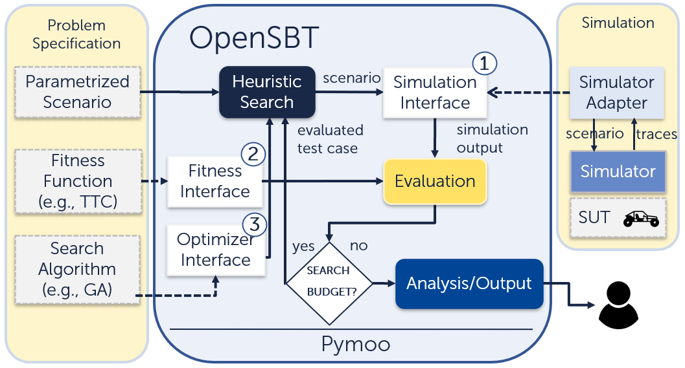

Welcome to OpenSBT’s documentation! (Version: 0.1.6)
About
OpenSBT is a modular and extensible codebase designed to facilitate search-based testing of automated driving systems, whether for research, in education or in an industrial context. An introductory video of OpenSBT can be found here: https://www.youtube.com/watch?v=qi_CTTzrk5s.
Getting Started
This section will help you get started with installing and running OpenSBT.
Installation
OpenSBT requires Python to be installed and its compatibility has been tested with Python 3.8. OpenSBT can be run as a standalone application or can be imported as a library.
Install the project as a dependency via pip:
$ pip install opensbt
Install the project as a standalone application:
First clone the project:
$ git clone https://github.com/opensbt/opensbt-core.git
Than install the dependencies:
$ pip install -r requirements.txt
A complete installation example is available as a jupyter notebook.
Example
In the core implementation of OpenSBT a simplified dummy simulator is integrated (linear motion planning, no GPU required).
A testing problem for the dummy simulator can be e.g., defined and executed as follows:
# imports not shown
problem = ADASProblem(
problem_name="DummySimulatorProblem",
scenario_path="scenarios/dummy_scenario.xosc",
simulation_variables=[
"orientation_ego",
"velocity_ego",
"orientation_ped",
"velocity_ped"],
xl=[0, 1, 0, 0.2],
xu=[180, 10,180, 3],
fitness_function=FitnessMinDistanceVelocity(),
critical_function=CriticalAdasDistanceVelocity(),
simulate_function=DummySimulator.simulate,
simulation_time=10,
sampling_time=0.25
)
# Set search configuration
config = DefaultSearchConfiguration()
config.n_generations = 50
config.population_size = 20
# Instantiate search algorithm
optimizer = NsgaIIOptimizer(
problem=problem,
config= config)
# Run search
res = optimizer.run()
# Write results
res.write_results(params = optimizer.parameters)
The experiment can be registed in OpenSBT via:
# imports not shown
experiment = Experiment(name="5",
problem=problem,
algorithm=AlgorithmType.NSGAII,
search_configuration=DefaultSearchConfiguration())
experiments_store.register(experiment)
To run an example test generation for this example run (flag -e holds the experiment number):
$ python run.py -e 5
Several result artefacts are generated after the generation has finished. All artefacts are written into the results folder in a folder named DummySimulator (problem name).
You can find also several other tutorials as jupyter notebooks which explain step-by-step of how integrate custom simulators and define testing components and objectives in OpenSBT.
The tutorials include as an example the integration of a real-world FMI-based AEB agent developed in the fortiss Mobility lab simulated in CARLA using the simulator adapter CARLA Runner Extension.
As another example we have integrated Simulink-based systems simulated in the Prescan simulator into OpenSBT.
APIs/Modules
You can find an overview of implemented modules, classes and functions here: OpenSBT Modules.
Tutorials
You can find several tutorials that help you to apply OpenSBT for your testing tasks.
Esmini Testing Example (DeepTest ‘23) - This tutorial explains how to model the testing problem as a search-based testing problem and integrate the esmini simulator to perform testing of an automated lanekeeping system.
Getting Started Tutorials - These tutorials explain the installation of OpenSBT, the execution of test runs, and the integration of a simulator into OpenSBT.
Architecture
OpenSBT builds upon Pymoo 0.6.0.1 and extends pymoos optimization related models to tailor heuristic search algorithms for testing automated driving systems. An overview of the architecture is shown below:
{kind=link}
Output
OpenSBT produces several result artefacts. An excerpt is given below.
Design Space Plot
Visualization of all evaluated test cases in the input space and predicted failing regions using the decision tree algorithm, displayed pairwise. Constraints of derived regions are stored in a CSV file: bounds_regions.csv. The learned tree is saved in tree.pdf.

Scenario 2D Visualization Visualization of traces of the ego vehicle and adversaries in a two-dimensional GIF animation.

Objective Space Plot Visualization of fitness values of evaluated test cases, displayed pairwise.

All Testcases
CSV file of all test inputs of all evaluated test cases: all_testcases.csv
All Failing Testcases
CSV file of all failing test inputs of all evaluated test cases: all_critical_testcases.csv
Calculation Properties
CSV file containing experiment configuration parameters (e.g., algorithm parameters, such as population size, number of iterations, search space, fitness function, etc.): calculation_properties.csv
Evaluation Results
CSV file with performance values of the algorithm, including the number of failing test cases found relative to all evaluations, and execution time: summary_results.csv
OpenSBTs Ecosystem
OpenSBT-Core: Contains the OpenSBT framework and usage tutorials.
CARLA Runner: Contains a simulation adapter to integrate the CARLA Simulator to simulate CARLA Agents and FMI-based SUTs with OpenSBT.
Prescan Runner: Contains a simulation adapter to integrate a Simulink-based SUT with OpenSBT to simulate it in the Prescan Simulator.
SUT Example: Contains FMI-based SUT for the CARLA tutorial example in the Jupyter notebooks.
Releases
Integrated Simulators
The following simulators have been integrated into OpenSBT:
Research Papers
OpenSBT has been used in multiple research projects:
Reference
If you use or extend OpenSBT, please cite our framework. Here is an example BibTeX entry:
@inproceedings{10.1145/3639478.3640027,
author = {Sorokin, Lev and Munaro, Tiziano and Safin, Damir and Liao, Brian Hsuan-Cheng and Molin, Adam},
title = {OpenSBT: A Modular Framework for Search-based Testing of Automated Driving Systems},
year = {2024},
isbn = {9798400705021},
publisher = {Association for Computing Machinery},
address = {New York, NY, USA},
url = {https://doi.org/10.1145/3639478.3640027},
doi = {10.1145/3639478.3640027},
booktitle = {Proceedings of the 2024 IEEE/ACM 46th International Conference on Software Engineering: Companion Proceedings},
pages = {94–98},
numpages = {5},
keywords = {search-based software testing, metaheuristics, scenario-based testing, autonomous driving, automated driving},
location = {Lisbon, Portugal},
series = {ICSE-Companion '24}
}
License
OpenSBT is licensed under the Apache License, Version 2.0
Contribution
If you like to contribute please contact one of the developers listed below or create a pull request. If you face any issues with OpenSBT feel free to create an issue or contact the developers.
Acknowledgements
OpenSBT has been developed by Lev Sorokin, Tiziano Munaro, and Damir Safin within the FOCETA Project.
Special thanks go to Brian Hsuan-Cheng Liao and Adam Molin from DENSO AUTOMOTIVE Deutschland GmbH for their valuable feedback and evaluation of OpenSBT on the AVP Case Study in the Prescan simulator.
Support
Lev Sorokin - lev.sorokin@tum.de